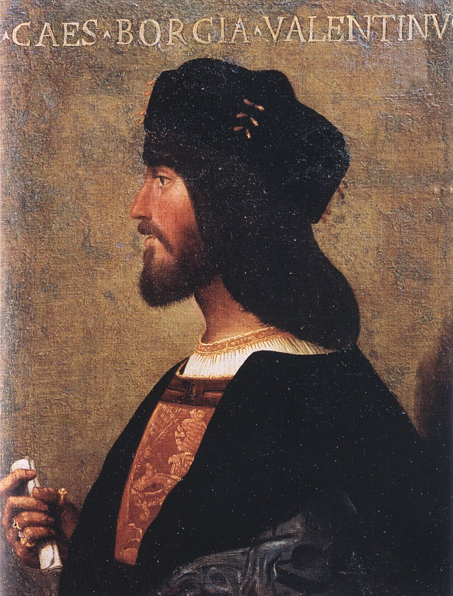

Cesare Borgia
Duke of Valentinois
Believed to possibly be a copy of an original contemporary portrait painting of Bartolomeo Veneto
Here's a time line of Cesare Borgia's life:
- January 1, 1431: Rodrigo de Lanzol y Borgia is born.
- 1456: Rodrigo is ordained Cardinal-Deacon of San Nicola in Carcere by his uncle.
- 1471: Rodrigo becomes Cardinal-Bishop of Albano.
- September 13, 1475: Cesare Borgia is born.
- August 1, 1492: Rodrigo becomes the Pope.
- July 1493: Alexander makes Borgia a cardinal.
- August 17, 1498: Cesare Borgia becomes Duke of Valentinois after renouncing his position as cardinal. Borgia negotiates with Louis XII to allow the annulment of his marriage in exchange for help invading Naples.
- 1501: Borgia Conquers Romagna and becomes Duke of Romagna. He also sieges Napes and Capua using French troops.
- June 1502: Borgia captures Urbino and Camerino. The Orsini family starts plotting against Borgia… and he kills them.
- August 18, 1503: Pope Alexander VI dies and Borgia is imprisoned by the new pope, Pius III.
- 1504: Borgia is exiled to Spain, but he escapes.
- March 12, 1507: Cesare Borgia is killed in battle.
"In the Garden of Eden Eve showed more courage than Adam..
when the serpent offered the forbidden fruit.
She knew that there was something better than paradise."
--- Cesare Borgia
If you have time, you should read more about this incredible human being on his Wikipedia entry .